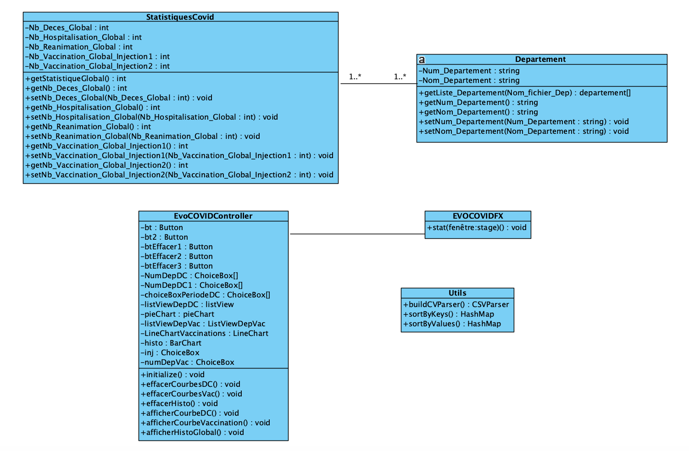

Conception
L'étape de conception est une étape importante pour la réussite d'un projet. Nous vous présentons ici le diagramme de classe correspondant à notre solution EVO Covid pour le suivi et l'analyse des décès et des vaccinations liées à la pandémie COVID 19.
Diagramme de classes
Voici le diagramme de classe global de EVO COVID : 
Les classes principales sont détaillées ci dessous :
-
Classe
Département: Cette classe définie les informations relatives aux différents départements français. Cette classe est utilisée principalement pour chercher les noms des départements en utilisant le numéro du département et inversement. -
Classe
StatistiquesCovid: Cette classe définie les différentes statistiques globales (décès, hospitalisation, vaccinations et réanimation) par département. Elle contient aussi les informations sur les départements les plus touchés en terme de décès et en terme de vaccinatio (injection 1 et 2). -
Classe
EvoCOVIDController: Cette classe permet de gérer les différents évennements sur l'interface graphique (validation des différents bouttons, récupération des valeurs des différentes listes de choix, traçage des différentes courbes dans les différents composants JAVAFX comme leLineChart, lePieChartet leBarChart). -
Classe
Utils: Cette classe définie des méthodes utilisées principalement pour le parsing des fichiers CSV et pour faire quelques opérations sur lesHashMapsutilisés pour stocker les différentes statistiques.
Architecture choisie : Modèle MVC
Pour EVO COVID, j'ai choisi d'utiliser le modèle/pattern MVC (Model-View-Controller) qui permet de bien organiser le code source. Le but de MVC est justement de séparer la logique du code en trois parties que l'on retrouve dans des fichiers distincts.
-
Modèle : cette partie gère les données de EVO COVID (données des décès et données des vaccinations). Le rôle du modèle de EVO COVID est d'aller récupérer les informations « brutes » dans les fichiers CSV, de les organiser et de les assembler pour qu'elles puissent ensuite être traitées par le contrôleur.
-
Vue : cette partie se concentre sur l'affichage. J'ai fait le choix d'utiliser la technologie JAVAFX popur construire l'interface de EVO COVID.
-
Contrôleur : cette partie gère la logique du code qui fait les calculs. C'est en quelque sorte l'intermédiaire entre le modèle et la vue : le contrôleur va demander au modèle les données, les analyser, prendre des décisions et renvoyer le texte à afficher à la vue.
Techniquement, chaque partie (Modèle, Vue et Contrôleur) est un package JAVA séparé. Pour plus de détail sur le code source, veuillez consulter la page suivante.